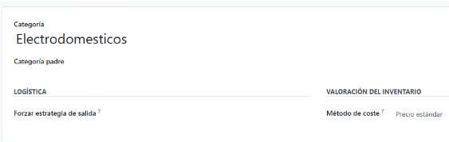
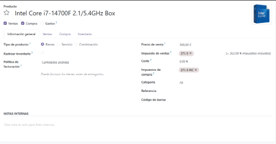

Creación de Categorías y Productos en ODoo
Introducción
En este documento voy a explicar los pasos que he realizado para la creación de las categorías y luego poner productos en estas.
Capturas y Explicaciones
Acceder al menu de categorias
Navegamos al menú de categorías para poder ir a crearlas.
 Hacemos clic en nuevo para crear la categoria.
Hacemos clic en nuevo para crear la categoria.
Creacion de la categoria PC
Creacion de la categoria PC.
Creacion de la categoria Iluminacion
Creacion de la categoria Iluminacion
Creacion de la categoria Electrodomesticos

Creacion de la categoria Electrodomesticos
Resultado final de la creacions de nuestras Categorias
Aqui podemos ver el menus de categorias tras haberlas creado
Vamos al menu de Productos

Accedemos al menú de productos para agregar uno nuevo Presionamos "Nuevo" para comenzar.
Creacion del primer producto

Rellenamos los campos de nombre para crearlo
Creacion del producto segundo

Rellenamos los campos de nombre para crearlo
Creacion del tercer producto

Rellenamos los campos de nombre para crearlo
Creacion del cuarto producto

Rellenamos los campos de nombre para crearlo
Creacion del quinto producto

Rellenamos los campos de nombre para crearlo
Resultado final de la creacion de nuestros productos
Y asi se veria el resultado final de productos